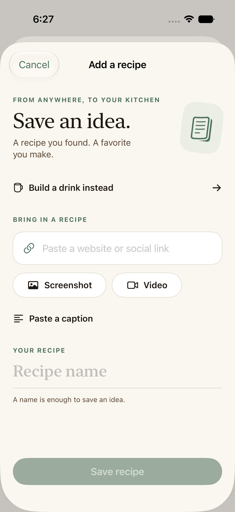
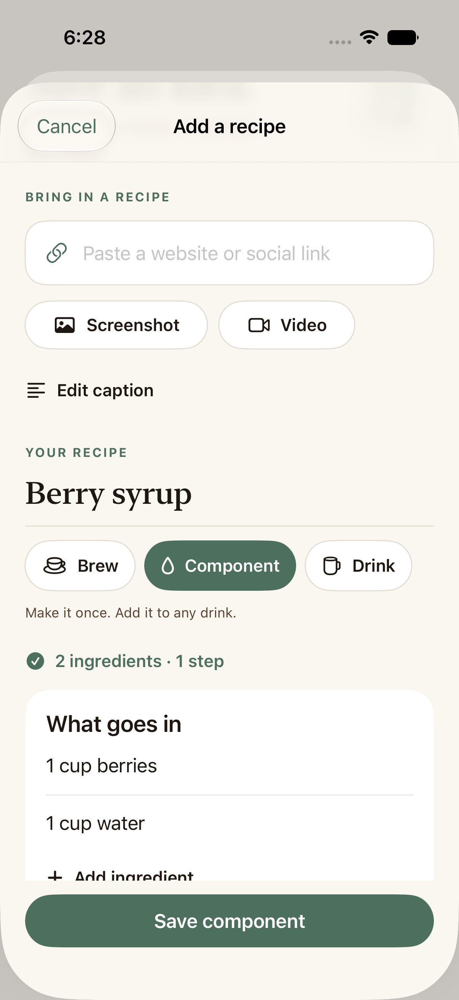
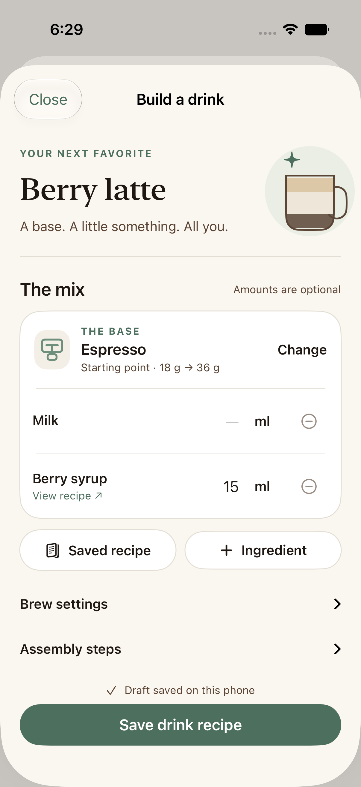
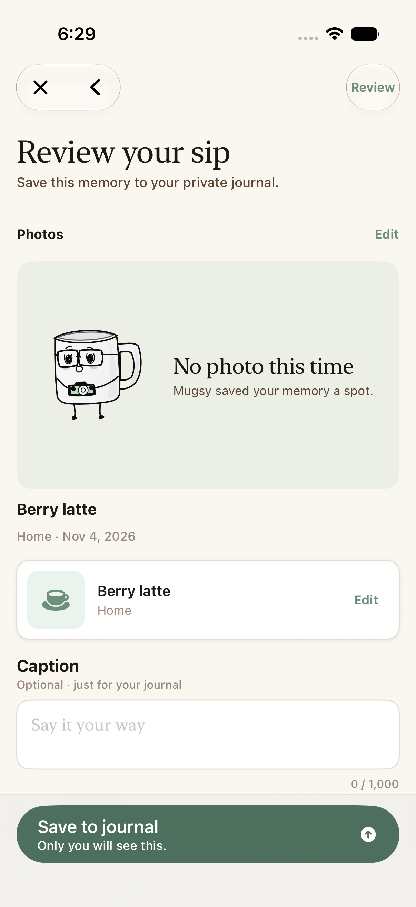
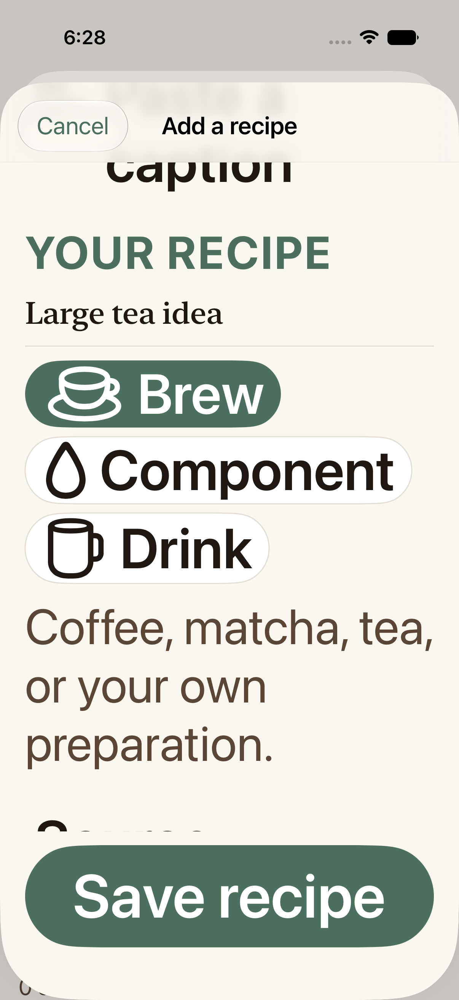
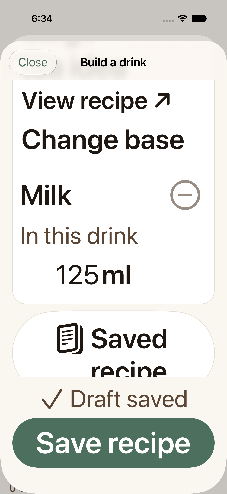
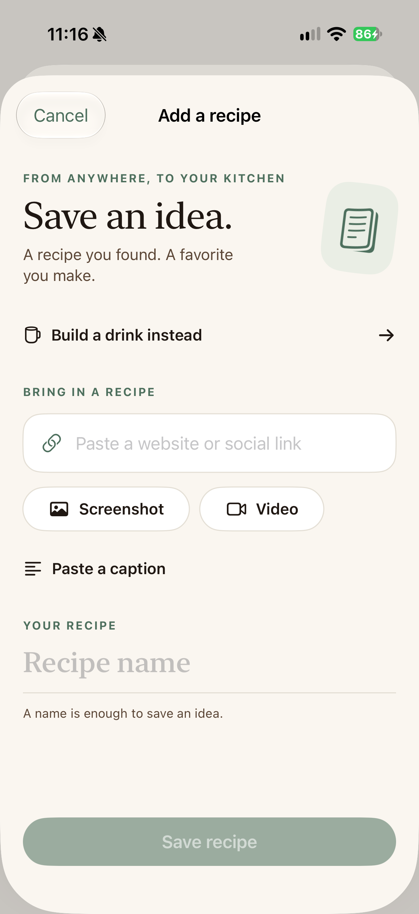
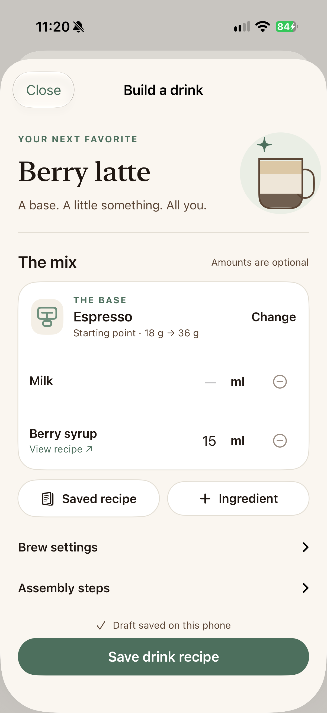
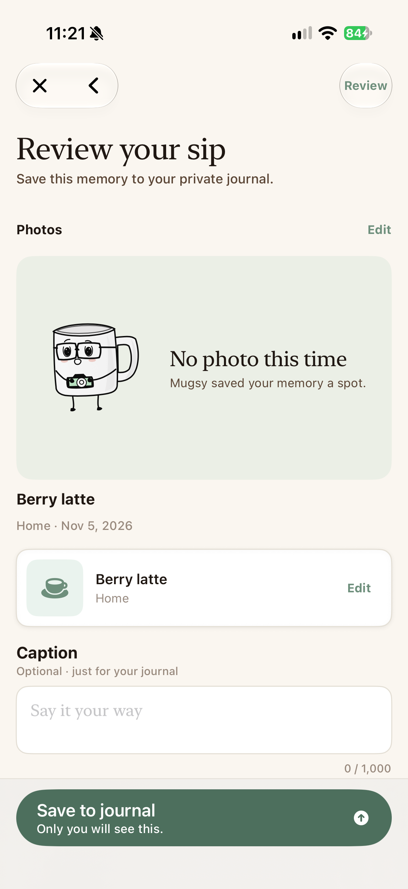
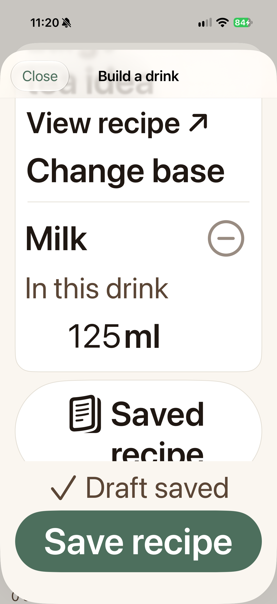

Mugshot · Native recipe composition
Save it. Mix it.
Make it yours.
A recipe can be a syrup, a brew, or the whole drink. Bring in an idea, keep it in your recipe book, then use it in as many drinks as you like. Optional amounts belong to the drink; the component batch stays its own recipe.
Fictional native captures only; the owner's recipe is excluded. The first sections preserve November 4 Simulator evidence. November 5 physical captures and delivery evidence appear below and in the review report.

1. Bring in an idea
Paste a source or caption, choose a screenshot, or just name a recipe. Structured details can come later.

2. Keep a reusable component
Use a syrup or foam in a drink without copying its batch instructions into the parent.

3. Put the drink together
Choose a base, add saved parts and optional amounts. Open a part, then return to the same mix.

4. Make and reflect
Optional guidance rejoins the shared capture, rating and review experience.
Largest accessibility text
The same native capture and builder, with optional content stacked and scrollable.

Capture at the largest accessibility text size.

Drink composition at the largest accessibility text size.
On iPhone · November 5
Inspected iPhone 16 Pro captures from the isolated hardware run. All 27 selected fixture checks and the separate owner read-only check pass. Mugshot Luna QA 0.5.3 (8) is installed; exact evidence and remaining human QA.

Bring in a recipe without a long form.

A saved component keeps its own instructions; the drink owns its usage amount.

Guidance rejoins shared rating and private review.

Largest accessibility text retains the complete amount.